Under The Spot
- The game was developed for Ludum Dare 54 under the theme "limited space" in 72 hours using the Unity engine and came in 6th place overall.
- It seamlessly blends platforming elements with light and shadow puzzles, creating a series of levels through a simple and intuitive mechanic. Play in browser
Our team is made up of four people, including two game designers, a 2D artist, and a programmer. My responsibilities included gameplay and level design, as well as system and shader programming.
Screenshot
Gameplay


The player utilizes the keyboard to control the movements of a small mouse. The objective in each level is to reach the shiny window.
The little mouse has the ability to traverse between ghost and shadow modes. In ghost mode, the game adopts a top-down perspective, and the mouse cannot jump. Conversely, in shadow mode, the gameplay switches to a platformer style.
All shadows have collisions, serving as either obstacles or platforms. Players have the ability to adjust the spotlight and manipulate shadows.
Design Process
Brainstorm

Level Macro
What I have learned from this project
Game jam prompted us to rapidly brainstorm and prototype an idea. I was surprised by how a simple mechanism could evolve into a series of levels. Additionally, I gained valuable experience in remote working. Throughout the development process, one of our team members was in a different time zone. We effectively communicated through Zoom, ensuring that information was updated promptly and consistently.